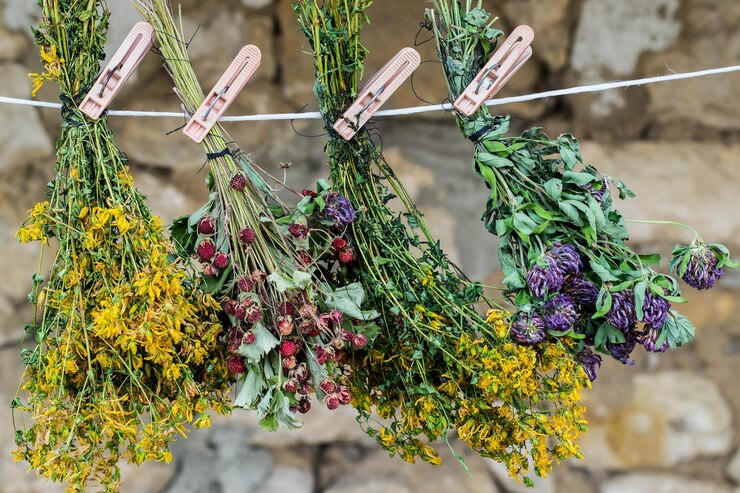
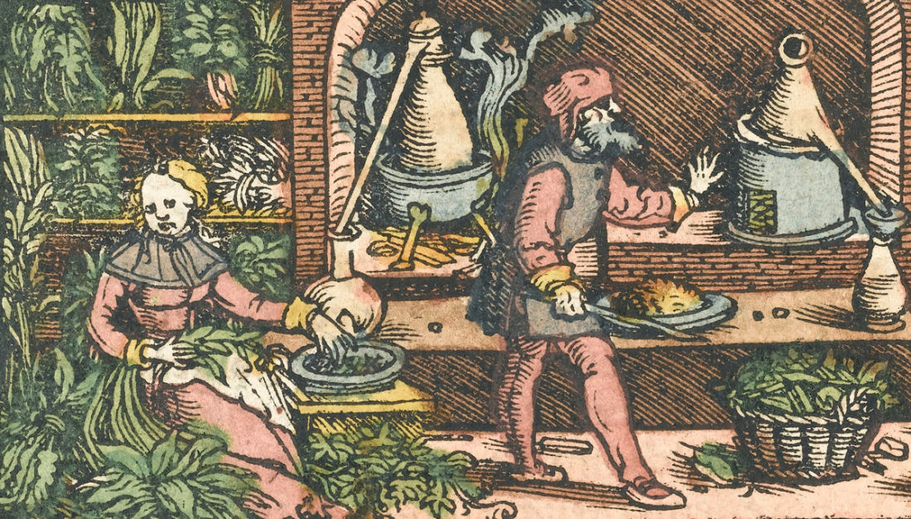

<!DOCTYPE html>
<html lang="en">
<head>
    <meta charset="UTF-8">
    <meta name="viewport" content="width=device-width, initial-scale=1.0">
    <title>Plantitas que curan</title>
  
    <!--link fonts family google-->
    <style>
        @import url('https://fonts.googleapis.com/css2?family=Dancing+Script&display=swap');
        </style>
<style>
    @import url('https://fonts.googleapis.com/css2?family=Croissant+One&display=swap');
    </style>
<!--link CSS-->
<link rel="stylesheet" href="css/style.css">

<!-- bockstrap-->
  <link href="https://cdn.jsdelivr.net/npm/bootstrap@5.3.2/dist/css/bootstrap.min.css" rel="stylesheet" integrity="sha384-T3c6CoIi6uLrA9TneNEoa7RxnatzjcDSCmG1MXxSR1GAsXEV/Dwwykc2MPK8M2HN" crossorigin="anonymous">
    
    
</html>
</head>

<body>

<header>

    
<div class="logo">

</div>


</header>


    
<main>
    <!--titulo-->
    <h1>Plantitas que curan</h1>
    
   

</main>
<nav>
  
  <ul class="menu">
    <a href="html/homenaje.html">Homenaje a las abuelas</a>
    <a href="html/Origenes.html">Origenes</a>
    
    
    
</ul>

<div class="container-fluid">
    <form class="d-flex" role="search">
       <input class="form-control me-2" type="search" placeholder="Ej. Manzanilla" aria-label="Search">
       <button class="btn btn-outline-success" type="submit">Buscar</button>
     </form>
   </div>
    </nav>


    <div id="carouselExampleAutoplaying" class="carousel slide" data-bs-ride="carousel">
        <div class="carousel-inner">
          <div class="carousel-item active">
            </div>
          <div class="carousel-item">
            
          </div>
          <div class="carousel-item">
            
      </div>
      <div class="carousel-item">
        
        </div>
        <button class="carousel-control-prev" type="button" data-bs-target="#carouselExampleAutoplaying" data-bs-slide="prev">
          <span class="carousel-control-prev-icon" aria-hidden="true"></span>
          <span class="visually-hidden">Previous</span>
        </button>
        <button class="carousel-control-next" type="button" data-bs-target="#carouselExampleAutoplaying" data-bs-slide="next">
          <span class="carousel-control-next-icon" aria-hidden="true"></span>
          <span class="visually-hidden">Next</span>
        </button>
      </div>
<!--presentacion-->

<Section class="bienvenida">

<h2>¡Les damos la bienvenida a Plantitas que curan!</h2>

<h3>Con solo mirar a nuestro al rededor podremos encontrar infinidades de plantas que nos ayudaran en cualquier momento de nuestras vidas, tanto con malestares, para ambientar nuestros almuerzos y por qué no incluirlas en nuestras dietas.
  Todo esto al alcance de nuestras manos… </h3>


</Section>

<!--Grid Container-->

<Section class="grid-conteiner">

<div class="grid-items3">
    
    <p class="pgrid-items3">
  Vamos a compartir diferentes maneras de consumir las diferentes plantas en infuciones, cremas como también en comidas.
  Aquí encontraran las principales y mas conocidas hierbas y plantas con sus distintos usos medicinales.
  También, una sección sobre diversas dolencias y el tratamiento natural que cada una de ellas requiere.
  Como complemento de información, se incorporan consejos sobre prácticas y actividades naturales y saludables con el objetivo de ayudar el funcionamienton del organismo.

    </p>
</div>
<div class="grid-items2">
  <p class="pgrid-itemes2">¿Cuando se comenzó a utilizar las hiebas para curar? ¿Por que?  
Estas y otras respuestas vamos a estar contando e investigando, ya que estas dudas me las empece hacer cuando comense con este proyecto.
Tengo una idea que se remonta a 8.000 años antes de Cristo, entre los egipcios y hebreos a 3.000 años antes de Cristo. No obstante, es con los griegos cuando empiezan a difundirse, de manera concreta en el mundo occidental, los usos medicinales de determinadas plantas curativas.
</p>
</div>

<div class="grid-items1">
<P class="pgrid-itemes1"> Aquí les voy a dejar un pequeño homenaje a mi abuela, <Span class="albaMirtha">Alba</Span> ella me cuido, me inculco todo el amor que le tengo a la naturaleza, tanto como a las plantas como a los animales. 

  Y también a <Span class="albaMirtha">Mirta</Span> ella es una abuela adoptiva digamos, me da el apoyo y consejos para seguir aprendiendo a travez de sus vivencias y sabiduría.
Si dudas que ambas me marcaron en mi vida con una gran huella de amor y aprendizaje.
<span class="amor">A ellas por aquí les dejo registrado MI AMOR.</span>
</P> <a class="pgrid-itemes1" href="../html/Homenaje.html">Homenaje</a>
</div>


</Section>

<footer>

  <div>
 <p class="encontranos">
        Nos encontramos en 
      </p>
    </div>

<<<<<<< HEAD
    <div class ="footerimg"></div>
    <div class="footerimg"></div>
    <div class="footerimg"></div>
=======
    <div class ="footerimg"></div>
    <div class="footerimg"></div>
    <div class="footerimg"></div>
>>>>>>> fa55d160c00369191ba8255d93eda30fb42833df
    <div clas="encontanos">
      

</footer>

<script src="https://cdn.jsdelivr.net/npm/bootstrap@5.3.2/dist/js/bootstrap.bundle.min.js" integrity="sha384-C6RzsynM9kWDrMNeT87bh95OGNyZPhcTNXj1NW7RuBCsyN/o0jlpcV8Qyq46cDfL" crossorigin="anonymous"></script>
  
</body>

</html>


